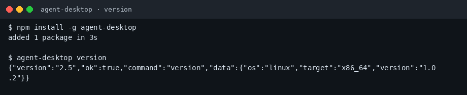
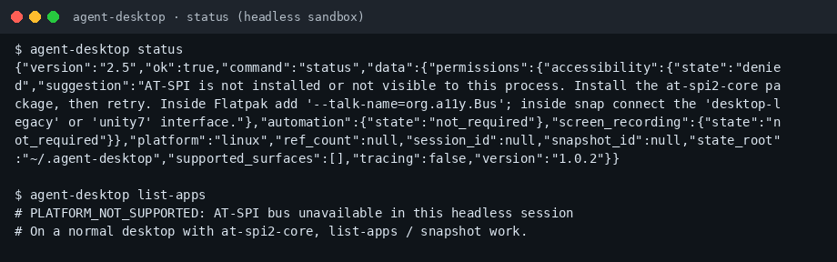
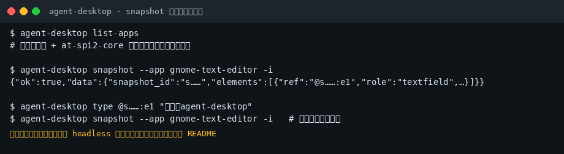

agent-desktop 小白中文教程
社区非官方导读 · 上游 vercel-labs/agent-desktop · 文档
完整图文教程在 GitHub README：
30 秒上手
npm install -g agent-desktop agent-desktop version agent-desktop status agent-desktop snapshot --app <AppName> -i
截图



记住三件事
- 必须在图形桌面会话里跑，Linux 需要 at-spi2-core
- ref 用一次就过期，改界面后重新 snapshot
- snapshot 含隐私，别贴到公开地方